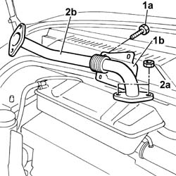

1080C50 PIPE CARRYING EXHAUST GAS TO E.G.R. VALVE - R + R
- Path
- Procedures > 10 ENGINE UNIT > 1080 EXHAUST EMISSION CONTROL SYSTEM > 1080C EXHAUST GAS RECIRCULATION SYSTEM (E.G.R.) > 1080C50 PIPE CARRYING EXHAUST GAS TO E.G.R. VALVE - R + R
- Kind
- repair procedure (removal / refitting; the operation number is the code)
- Applies to
- engines: 2.8 JTD 8V; all production periods
- Interactive page
- https://sloeber94.github.io/elrnDB-fDct/en/#/244000902
Applies to: engines: 2.8 JTD 8V; all production periods
 Removing
Removing
 Refitting
RefittingSee in Op. 1048A21
See in Op. 1080C10
See in Op. 1080C17
See in Op. 1080C16
Op. 1088D67 COOLANT PIPE BETWEEN COOLANT RESERVOIR AND THERMOSTAT - R.R.
1. Undo the fixing bolts (1a) and remove the protective cover (1b).
2. Undo the fixing nuts (2a) and remove the exhaust gas supply pipe (2b).

Applies to: engines: 2.8 JTD 8V; all production periods
Refitting
Removing- Fit the pipe in place and tighten the fixing nut checking the torque.
- Position the protective cover and tighten the fixing bolts.
Op. 1088D67 COOLANT PIPE BETWEEN COOLANT RESERVOIR AND THERMOSTAT - R.R.
See in Op. 1080C16
See in Op. 1080C17
See in Op. 1080C10
See in Op. 1048A21